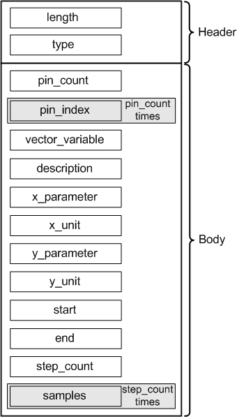

LinearWaveformAttrType
Contains a complete result waveform for one or more pins. The waveform can be a captured waveform or a reference waveform.
The data type is DRLLinearWaveformAttr.

Field Name |
Data Type |
Description |
Comments |
|---|---|---|---|
length |
int |
Attribute length |
These fields form the attribute header. |
type |
short |
Attribute type |
|
pin_count |
short |
Pin count |
|
pin_index |
short |
Pin index |
This field occurs as often as specified in the pin_count field. |
vector_variable |
string |
Vector variable name, empty string if no vector variable is defined |
|
description |
string |
Description or title |
|
x_parameter |
string |
X-axis parameter |
|
x_unit |
string |
X-axis unit |
|
y_parameter |
string |
Y-axis parameter |
|
y_unit |
string |
Y-axis unit |
|
start |
double |
Start value |
|
end |
double |
End value |
|
step_count |
int |
Step count |
|
samples |
double |
Values |
This field occurs as often as defined in the step_count field. |
Functional changes
- Introduced before SmarTest 6.3.2